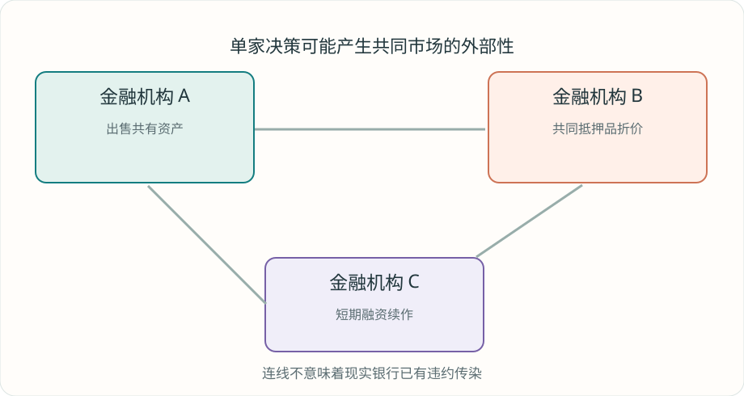
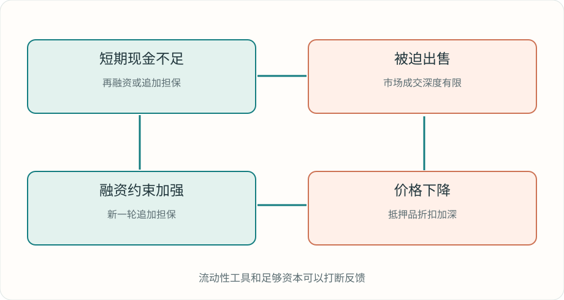

宏观审慎与金融稳定
账面权益为正的银行为什么仍可能遭遇挤兑？从资本杠杆、共同抵押品与信贷周期理解系统风险。
银行有正权益为什么仍可能面临现金挤兑？
偿付能力是资产可以覆盖负债；流动性是当下有足够现金履行支付义务。银行的长期贷款和证券在账面上可能具有价值，但无法立即无损出售以应付大量提款；短期现金充裕的机构也可能因为资产减值而资不抵债。因此不能用净资产、现金持有或单个盈利指标替代完整的金融稳定诊断。
改变资产损失率，看到的究竟是什么风险
资产损失怎样侵蚀银行资本
假定损失发生瞬间负债不变，使用普通账面资产、负债、权益而非监管风险权重。
默认资产减少5后为95，负债仍92，权益=3。权益资产比3/95≈3.16%。若损失进一步超过8，简单模型权益转为负数；这不代表现实中的存款人最终损失或处置程序能够由单式计算确定。
为什么单家银行防御行为会一起制造系统风险
若多个机构持有相似的抵押资产，某机构面临现金追缴时抛售资产，市场流动性不足会让成交价格下跌；其他机构的抵押品因此被折价，融资机构提高保证金或减少再融资，形成新一轮出售压力。共同暴露与火售外部性是系统性风险重要来源，不能通过简单相加单家机构风险评分完全描述。


信用评级、证券质押、基金赎回及银行间融资都可能参与类似传导，但具体损失分配必须由真实合同、对手方暴露和市场深度决定，不能把抽象箭头当成真实银行传染已经发生的证据。
逆周期资本缓冲的目的不是预测每次危机
巴塞尔委员会的逆周期资本缓冲（CCyB）要求银行在广泛信贷风险积累时建立额外资本空间，在压力阶段可依据监管规定释放，以免资本约束进一步迫使信贷突然收缩。不能用一个固定的信贷/GDP 缺口阈值代替判断：监管材料还要求综合考虑信贷增长、资产价格、信用风险和借款可负担性等维度。
| 工具 | 关注的机制 | 不能保证 |
|---|---|---|
| 逆周期资本缓冲 | 系统性信用风险和银行资本空间 | 每次衰退都毫无贷款收缩 |
| 贷款价值比 LTV | 抵押贷款与担保资产价值的比例 | 房价会按固定幅度下降 |
| 债务收入比 DTI / DSTI | 借款人收入与偿债压力 | 不存在信用错配 |
| 流动性规则与压力测试 | 资金错配、现金流和共同市场风险 | 所有短期市场都不会冻结 |
宏观审慎与微观审慎为什么必须互补
微观审慎重视单个机构的偿付与审慎经营；宏观审慎还要评估共同行为、关联网络以及周期中杠杆积累。若一项行业投资热潮发生，应分别评估项目真实现金流、融资期限、资产抵押重复性、集中度和融资链尾部风险，而不是仅从投资总量激增就宣布泡沫或某机构已违规。
来源与阅读
监管制度依据 BIS、联储与 IMF 资料；数值全部为构造的账面示例。